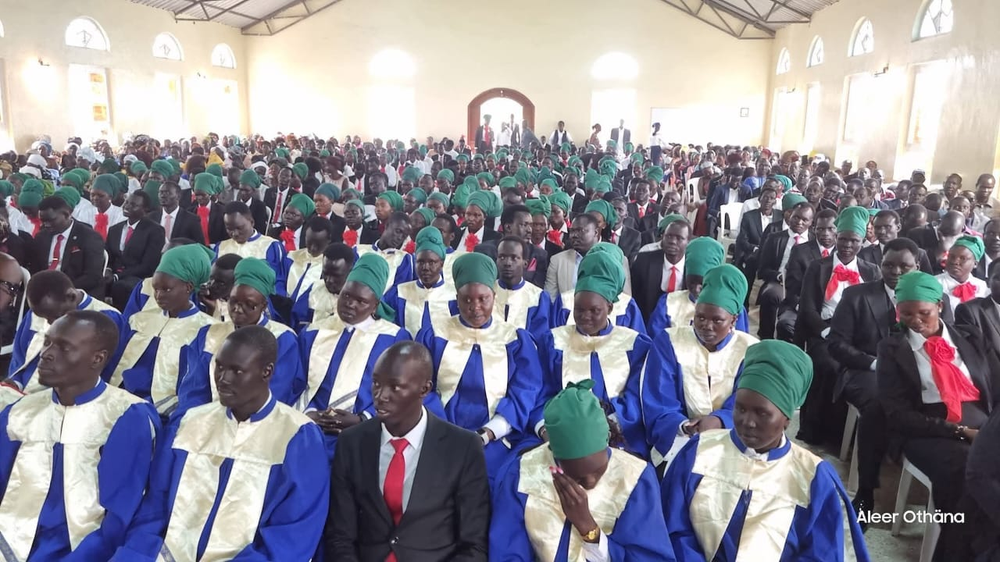

United by Christ, Transformed by His Love
To evangelize, disciple, and equip young people within the ECSS to live Christ-centred lives, uphold Biblical truth, develop Godly leadership, and participate faithfully in the growth of the Church and society.
To raise a Christ-centred generation of young people rooted in Holy Scripture, spiritually mature, morally upright, united in faith, and equipped to proclaim and live the Gospel of Jesus Christ for the glory of God.